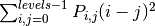
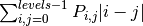
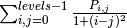
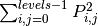
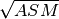
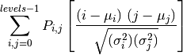

Module: feature¶
| skimage.feature.greycomatrix(image, ...[, ...]) | Calculate the grey-level co-occurrence matrix. |
| skimage.feature.greycoprops(P[, prop]) | Calculate texture properties of a GLCM. |
| skimage.feature.hog(image[, orientations, ...]) | Extract Histogram of Oriented Gradients (HOG) for a given image. |
greycomatrix¶
- skimage.feature.greycomatrix(image, distances, angles, levels=256, symmetric=False, normed=False)¶
Calculate the grey-level co-occurrence matrix.
A grey level co-occurence matrix is a histogram of co-occuring greyscale values at a given offset over an image.
Parameters : image : array_like of uint8
Integer typed input image. The image will be cast to uint8, so the maximum value must be less than 256.
distances : array_like
List of pixel pair distance offsets.
angles : array_like
List of pixel pair angles in radians.
levels : int, optional
The input image should contain integers in [0, levels-1], where levels indicate the number of grey-levels counted (typically 256 for an 8-bit image). The maximum value is 256.
symmetric : bool, optional
If True, the output matrix P[:, :, d, theta] is symmetric. This is accomplished by ignoring the order of value pairs, so both (i, j) and (j, i) are accumulated when (i, j) is encountered for a given offset. The default is False.
normed : bool, optional
If True, normalize each matrix P[:, :, d, theta] by dividing by the total number of accumulated co-occurrences for the given offset. The elements of the resulting matrix sum to 1. The default is False.
Returns : P : 4-D ndarray
The grey-level co-occurrence histogram. The value P[i,j,d,theta] is the number of times that grey-level j occurs at a distance d and at an angle theta from grey-level i. If normed is False, the output is of type uint32, otherwise it is float64.
References
[R23] The GLCM Tutorial Home Page, http://www.fp.ucalgary.ca/mhallbey/tutorial.htm [R24] Pattern Recognition Engineering, Morton Nadler & Eric P. Smith [R25] Wikipedia, http://en.wikipedia.org/wiki/Co-occurrence_matrix Examples
Compute 2 GLCMs: One for a 1-pixel offset to the right, and one for a 1-pixel offset upwards.
>>> image = np.array([[0, 0, 1, 1], ... [0, 0, 1, 1], ... [0, 2, 2, 2], ... [2, 2, 3, 3]], dtype=np.uint8) >>> result = greycomatrix(image, [1], [0, np.pi/2], levels=4) >>> result[:, :, 0, 0] array([[2, 2, 1, 0], [0, 2, 0, 0], [0, 0, 3, 1], [0, 0, 0, 1]], dtype=uint32) >>> result[:, :, 0, 1] array([[3, 0, 2, 0], [0, 2, 2, 0], [0, 0, 1, 2], [0, 0, 0, 0]], dtype=uint32)
greycoprops¶
- skimage.feature.greycoprops(P, prop='contrast')¶
Calculate texture properties of a GLCM.
Compute a feature of a grey level co-occurrence matrix to serve as a compact summary of the matrix. The properties are computed as follows:
- ‘contrast’: 
- ‘dissimilarity’: 
- ‘homogeneity’: 
- ‘ASM’: 
- ‘energy’: 
- ‘correlation’:

Parameters : P : ndarray
Input array. P is the grey-level co-occurrence histogram for which to compute the specified property. The value P[i,j,d,theta] is the number of times that grey-level j occurs at a distance d and at an angle theta from grey-level i.
- prop : {‘contrast’, ‘dissimilarity’, ‘homogeneity’, ‘energy’, ‘correlation’, ‘ASM’}, optional
The property of the GLCM to compute. The default is ‘contrast’.
Returns : results : 2-D ndarray
2-dimensional array. results[d, a] is the property ‘prop’ for the d’th distance and the a’th angle.
Examples
Compute the contrast for GLCMs with distances [1, 2] and angles [0 degrees, 90 degrees]
>>> image = np.array([[0, 0, 1, 1], ... [0, 0, 1, 1], ... [0, 2, 2, 2], ... [2, 2, 3, 3]], dtype=np.uint8) >>> g = greycomatrix(image, [1, 2], [0, np.pi/2], levels=4, ... normed=True, symmetric=True) >>> contrast = greycoprops(g, 'contrast') >>> contrast array([[ 0.58333333, 1. ], [ 1.25 , 2.75 ]])
hog¶
- skimage.feature.hog(image, orientations=9, pixels_per_cell=(8, 8), cells_per_block=(3, 3), visualise=False, normalise=False)¶
Extract Histogram of Oriented Gradients (HOG) for a given image.
- Compute a Histogram of Oriented Gradients (HOG) by
- (optional) global image normalisation
- computing the gradient image in x and y
3) computing gradient histograms 3) normalising across blocks 4) flattening into a feature vector
Parameters : image : (M, N) ndarray
Input image (greyscale).
orientations : int
Number of orientation bins.
pixels_per_cell : 2 tuple (int, int)
Size (in pixels) of a cell.
cells_per_block : 2 tuple (int,int)
Number of cells in each block.
visualise : bool, optional
Also return an image of the HOG.
normalise : bool, optional
Apply power law compression to normalise the image before processing.
Returns : newarr : ndarray
HOG for the image as a 1D (flattened) array.
hog_image : ndarray (if visualise=True)
A visualisation of the HOG image.
References
- http://en.wikipedia.org/wiki/Histogram_of_oriented_gradients
- Dalal, N and Triggs, B, Histograms of Oriented Gradients for Human Detection, IEEE Computer Society Conference on Computer Vision and Pattern Recognition 2005 San Diego, CA, USA